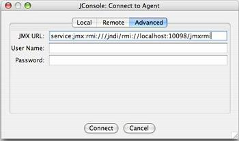
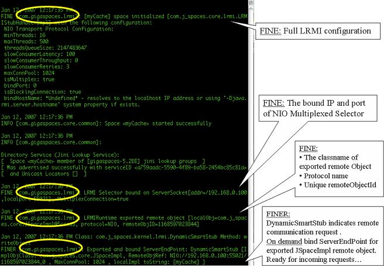
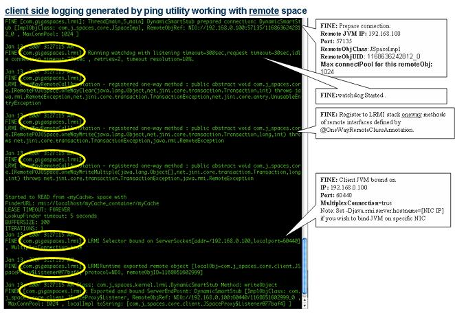

Communication Protocol
Some of the features discussed on this page are not part of the open-source edition, and are only available in the licensed editions (starting with ).
provides a pluggable communication adaptor, LRMI (Light Remote Method Invocation), built on top of the NIO communication protocol.
LRMI uses a GenericExporter that implements the net.jini.export.Exporter interface.
All components that represent remote objects/services (for example:Distributed Transaction Manager, Lookup Service, GSA, GSM, GSC, Space) use the LRMI protocol.
|
The LRMI protocol was designed to allow multiple services running within the same JVM to share their communication resources and to allow non-blocking IO communication with minimal serialization overhead. For example, it allows different space instances hosted within the same GSC to share the same LRMI resources without exhausting the JVM and machine resources. LRMI comes with default settings that may not be optimized for every scenario. You may need to change the defaults for the client or server side to have the maximum throughput and lowest latency your network and hardware may provide.
|

|
LRMI uses two independent resource pools working collaboratively to allow a client to communicate with a server in a scalable manner: A client connection pool configured via the com.gs.transport_protocol.lrmi.max-conn-pool at the client side and a server connection thread pool configured via the com.gs.transport_protocol.lrmi.max-threads at the server side. You may configure these two pools' sizes and their resource timeouts to provide maximum throughput and low latency when a client communicates with a server. The default LRMI behavior will open a different connection at the client side and start a connection thread at the server side, once a multithreaded client accesses a server component. All client connections may be shared between all the client threads when communicating with the server. All server side connection threads may be shared between all client connections.
Client LRMI Connection Pool
The client LRMI connection pool is maintained per server component - i.e. by each space partition. For each space partition a client maintains a dedicated connection pool shared between all client threads accessing a specific partition. When having multiple partitions (N) hosted within the same GSC, a client may open maximum of N * com.gs.transport_protocol.lrmi.max-conn-pool connections against the GSC JVM process.
You may need to change the com.gs.transport_protocol.lrmi.max-conn-pool value (default = 1024) to have a smaller number. The default may be high for applications with multiple partitions.
Client total # of open connections = com.gs.transport_protocol.lrmi.max-conn-pool * # of partitions
This may result in a very large amount of connections started at the client side resulting in a "Too many open files" error. You should increase the OS' max file descriptors amount by calling the following before running the client application (on UNIX):
ulimit -n 32000
or by lowering the com.gs.transport_protocol.lrmi.max-conn-pool value.
Server LRMI Connection Thread Pool
The LRMI connection thread pool is a server side component. It is in charge of executing the incoming LRMI invocations. It is a single thread pool within the JVM that executes all the invocations, from all the clients and all the replication targets.
In some cases you might need to increase the LRMI Connection thread pool maximum size. Without this tuning activity, the system might hang in the case of a large amount of concurrent access. Using a value as 1024 for the LRMI Connection Thread Pool should be sufficient for most large scale systems.
Selector Threads
To increase the concurrency and scalability of the LRMI behavior, multiple NIO channel selectors are used for write and read network traffic activities and is configured via the com.gs.transport_protocol.lrmi.selector.threads property. The same property is used to configure both the write and read selector thread pool size.
Machines with Multi-Core CPUs can leverage this functionality in an optimal manner. A dedicated thread pool exists for socket write operations and another thread pool for socket read operations. The read selector threads (4 by default) listens for incoming client invocations. They receive the incoming traffic from the network, read the raw data bytes and transfer these to be processed by the LRMI connection thread pool. The write selector threads is used when there is a need to send data back to the client side with asynchronous operations (blocking read/ blocking write/notifications).
Min Latency and Max Throughput
Both of the resource pools elements might have a different life span. Usually, once a connection is established between a client and a server, it will be open as long as the client is still running. The connection will be terminated once a client is terminated or when the client does not perform any network activity for some time and the connection will be identified as idle. See the watchdog description below for how this behavior should be configured. The same goes for LRMI connection threads, it will be available as long as there are clients accessing the server. A connection thread will return into the pool and the pool will shrink itself once there is any remote activity for some time. This timeout is configured via the com.gs.transport_protocol.lrmi.threadpool.idle_timeout. LRMI threads and connection are used also for server to server communication such as data replication.
The size of the LRMI connection pool and LRMI thread pool will impact the latency response time for a remote request. Once any of these pools is fully exhausted a client request will be suspended until a free connection or thread becomes available.
The number of connections a client should open also depends on the size of the objects being sent across the wire. For a multi-threaded client writing or reading large objects, you may have the same amount of connections established for each client thread. This will ensure minimal latency request duration with maximum throughput.
Watchdog
When reading from a NIO SocketChannel and the connection between the client and server fails abnormally, no notification is generated. The most common example of this failure type is the network cable becoming disconnected while performing the read operation. In this case, the read operation is blocked for a long time, without ever knowing that the connection is closed. This can cause several problems, such as exceeding the number of open sockets on the server or causing client read requests to hang.
Known solutions and problems they may have:
- TCP keep alive mechanism – TCP has an option for sending keep alive packets in order to detect communication failures, and the default configuration is 2 hours. We recommend changing this value to several seconds.
- Read timeout – the old Java IO package allows the execution of read operations with a user defined timeout. This does not work with NIO. You can still set the timeout on
channel.socket(), but this only applies to reading from socket InputStream and not channel reads.
If the TCP is configured as follows:
- tcp_keepalive_time = 7200 (seconds)
- tcp_keepalive_intvl = 75 (seconds)
- tcp_keepalive_probes = 9 (number of probes)
This means that the keepalive process waits for two hours (7200 secs) for socket activity before sending the first keepalive probe, and then resends it every 75 seconds. If no ACK response is received for nine consecutive times, the connection is marked as broken.
The watchdog network failure detection mechanism applies to the space proxy (client side) when interacting with a remote space and with space-space interaction (replication). The watchdog is efficient both in terms of memory and CPU consumption with minimal overhead.
The network failure detection mechanism is timeout-based – each read operation has a predefined timeout. There are two timeout modes: Idle connection timeout and request timeout:
- Idle connection timeout – occurs when a thread listens on a server socket for longer than the defined timeout. This happens when a space listens for client requests, or a client waits for server notifications. Configured via the
com.gs.transport_protocol.lrmi.idle_connection_timeout system property.
- Listening timeout handling – timeout is perceived as a broken link and the server closes existing connection to the client. When the link between the server and the client is restored – connection is reestablished.
- Heartbeat mechanism – used to avoid closing valid connections.
- Request timeout – occurs when the client sends a request to the space and doesn't get a reply for the defined timeout. Configured via the
com.gs.transport_protocol.lrmi.request_timeout system property.
- Request timeout handling – when a timeout expires, the connection is first tested by establishing a new dummy connection to the server using the same port. If the connection is established successfully, the timeout is ignored and connection timeout is reset. Otherwise, the connection is closed. The dummy request timeout is controlled via the
com.gs.transport_protocol.lrmi.inspect_timeout system property.
Failure detection uses a watchdog design pattern to monitor timeouts of NIO operations. Watchdog is a singleton thread that runs every predefined period of time, according to timeout resolution, checks all the threads that are currently registered and fires a timeout event on the threads that exceeded their allowed timeout.
When network failure occurs and notify is used, the space tries to resend the notify the number of times specified in the <notifier-retries> property. When using a clustered space, <notifier-retries> is used together with the network failure detection properties.
A value for the com.gs.transport_protocol.lrmi.idle_connection_timeout and the com.gs.transport_protocol.lrmi.request_timeout properties should be determined based on the amount of total clients a system may have and the number of the concurrent activities these clients may have. Small values (100 and 30, respectively) are recommended for systems with very large amounts of clients with high concurrency. High values (900 and 300, respectively) are recommended for system with very small amount of clients with high concurrency.
bind-port
Once a client communicates with a server component it initially uses a bootstrap port specified as part of the server proxy stored with the lookup service. Once a client opens a connection with a server component a random port is opened at the server side and used to serve the client (private port). You may specify range of ports to be used by the server component to restrict the server from using arbitrary random ports that are not available due to a firewall or some other network restriction. The com.gs.transport_protocol.lrmi.bind-port allows you to configure the available ports to use.
maxBufferSize
An LRMI connection maintains a buffer that is used when sending TCP packets. This buffer size determines the amount of TCP packets that will be sent to deliver a request. When having requests with large amount of data, you may need to increase the com.gs.transport_protocol.lrmi.maxBufferSize to reduce the amount of packets sent.
Client as a Server
A server component may open a connection back to the client in the following cases:
- When a request includes a class that cannot be found on the server classpath, the GigaSpaces dynamic class loading component requests the missing class to be sent to the server
- When a client registers for notifications
- When a client performs blocking read/take operation (timeout > 0)
- When a change has been done with the service topology (service terminated or added), the lookup service notifies the client (client lookup cache)
To allow the above, the client must set the java.rmi.server.hostname property with the relevant IP. For a Multi-Homed machines this is a critical setting, since without having this set, the server side might use the wrong IP Address to communicate back with the client.
LRMI Configuration
The LRMI configuration options set as system properties. They are listed below:
| Property name |
Description |
Default |
Server Client |
Unit |
Override on Client Side? |
com.gs.transport_protocol
.lrmi.max-conn-pool |
The maximum amount of connections to the space server remote services that can work simultaneously in a client connection pool. Starts with 1 connection. Defined per each remote service (by default, each remote service has 1024 maximum connections). |
1024 |
Server |
Conne
ction |
No |
com.gs.transport_protocol
.lrmi.max-threads |
maintains a thread pool on the server side (at the GSC process level), that manages incoming remote requests. This parameter specifies the maximum size of this thread pool. See note below. |
128 |
Server |
Threads |
No |
com.gs.transport_protocol
.lrmi.min-threads |
maintains a thread pool on the server side that manages incoming remote requests. The thread pool size is increased each time with one additional thread and shrinks when existing threads are not used for 5 minutes. This parameter specifies the minimum size of this thread pool. |
1 |
Server |
Threads |
No |
com.gs.transport_protocol.
lrmi.custom.threadpool.max-threads |
maintains a thread pool on the server side that manages incoming remote requests for Task and Notification invocation. The thread pool size is increased each time with one additional thread and shrinks when existing threads are not used for 5 minutes. This parameter specifies the maximum size of this thread pool. |
128 |
Server |
Threads |
No |
com.gs.transport_protocol.
lrmi.custom.threadpool.min-threads |
maintains a thread pool on the server side that manages incoming remote requests for Task and Notification invocation. The thread pool size is increased each time with one additional thread and shrinks when existing threads are not used for 5 minutes. This parameter specifies the minimum size of this thread pool. |
1 |
Server |
Threads |
No |
com.gs.transport_protocol.
lrmi.system-priority.
threadpool.max-threads |
maintains a thread pool on the server side that manages incoming remote requests for admin invocation. The thread pool size is increased each time with one additional thread and shrinks when existing threads are not used for 5 minutes. This parameter specifies the maximum size of this thread pool. |
8 |
Server |
|
|
com.gs.transport_protocol.
lrmi.system-priority.
threadpool.min-threads |
maintains a thread pool on the server side that manages incoming remote requests for admin invocation. The thread pool size is increased each time with one additional thread and shrinks when existing threads are not used for 5 minutes. This parameter specifies the maximum size of this thread pool. |
1 |
Server |
|
|
com.gs.transport_protocol
.lrmi.bind-port |
Server port used for incoming client requests, or notifications from server to client. The server port is set by default to 0, which means next free port. This means that whenever is launched, it allocates one of the available ports. Define a specific port value to enforce a specific port on the space server or client side. You can define a range of ports |
0 |
Server |
|
No |
| java.rmi.server.hostname |
Binds the Server on a specified network interface. If java.rmi.server.hostname is null the system sets the localhost IP address. |
host
name |
Client & Server |
|
No |
com.gs.transport_protocol
.lrmi.idle_conn
ection_timeout |
Watchdog idle connection timeout. |
900 sec |
Client |
Seconds |
Yes |
com.gs.transport_protocol
.lrmi.request_timeout |
Watchdog request timeout. |
30 sec |
Client |
Seconds |
Yes |
com.gs.transport_protocol
.lrmi.inspect_timeout |
Watchdog dummy packet connection timeout used when the watchdog suspects a request connection is blocked (com.gs.transport_protocol.lrmi.request_timeout elapsed). |
1000 millisec |
Client |
millisec |
Yes |
com.gs.transport_protocol
.lrmi.threadpool.idle_timeout |
LRMI thread pool idle timeout. Usually should be tuned for server side |
300000 milisec |
Server |
millisec |
No |
com.gs.transport_protocol
.lrmi.connect_timeout |
LRMI timeout to establish a socket connection |
30 sec |
Server |
Seconds |
No |
com.gs.transport_protocol
.lrmi.maxBufferSize |
The NIO internal cache (a DirectByteBuffer) might cause an OutOfMemoryError due-to direct memory exhaustion. To avoid such a scenario, the LRMI layer breaks the outgoing buffer into a several chunks. By doing so, the NIO internal cache is kept small, and may not cause any error. The size of these chunks can be determined by this property |
65536 (64k) |
Client & Server |
Bytes |
Yes |
com.gs.transport_protocol
.lrmi.selector.threads |
LRMI selector threads. This should be configured with multi core machines. Usualy should be tuned for server side |
4 |
Client & Server |
Threads |
No |
com.gs.transport_protocol
.lrmi.use_async_connect |
Use asynchronous IO to connect. The default of true should work for most systems. |
true |
Client & Server |
boolean |
No |
com.gs.transport_protocol
.lrmi.classloading |
Enables LRMI dynamic class loading. |
true |
Server |
boolean |
No |
com.gs.transport_protocol
.lrmi.simple-classloading |
Enables non-LRMI dynamic class loading. |
false |
Server |
boolean |
No |
com.gs.transport_protocol
.lrmi.classloading.import |
Enables importing of classes using LRMI dynamic class loading. |
true |
Server |
boolean |
No |
com.gs.transport_protocol
.lrmi.classloading.export |
Enables exporting of classes using lrmi dynamic class loading. |
true |
Server |
boolean |
No |
com.gs.transport_protocol
.lrmi.tcp-send-buffer-size |
Set the TCP Send Buffer size (SO_SNDBUF). |
OS default |
Client & Server |
bytes |
Yes |
com.gs.transport_protocol
.lrmi.tcp-receive-buffer-size |
Set the TCP receive Buffer size (SO_RCVBUF). |
OS default |
Client & Server |
bytes |
Yes |
com.gs.transport_protocol
.lrmi.tcp-keep-alive |
Set the TCP keep alive mode (SO_KEEPALIVE). |
true |
Client & Server |
Seconds |
Yes |
com.gs.transport_protocol
.lrmi.timeout_resolution |
Resolution in percents. Timeout resolution indicates the accuracy of the request timeout. |
10 |
Client |
Percent |
Yes |
com.gs.transport_protocol
.lrmi.system-priority.
threadpool.min-threads |
This parameter specifies the minimum size of a thread pool used to control admin API calls |
1 |
Server |
Threads |
No |
com.gs.transport_protocol
.lrmi.system-priority.threadpool.max-threads |
This parameter specifies the maximum size of a thread pool used to control admin API calls |
8 |
Server |
Threads |
No |
com.gs.transport_protocol
.lrmi.custom.threadpool.
idle_timeout |
Idle timeout |
300000 millisec |
|
Invo
cation |
No |
com.gs.transport_protocol
.lrmi.threadpool.
queue-size |
Regualr operations thread pool queue size |
|
2147483647 |
|
Invo
cation |
com.gs.transport_protocol
.lrmi.custom.threadpool.
queue-size |
Custom operations thread pool queue size |
|
2147483647 |
|
Invo
cation |
com.gs.transport_protocol
.lrmi.system-priority.
threadpool.queue-size |
System operations thread pool queue size |
|
|
2147483647 |
|
Please note the following regarding parameter com.gs.transport_protocol.lrmi.max-threads.
Tuning com.gs.transport_protocol.lrmi.max-threads
This property controls the maximum number of threads per space instance which handle incoming operations (i.e. maximum number of remote operations handled simultaneously).
The default value of 128 is suitable for common workloads, but some workloads may be optimized from increasing this value, whereas others may benefit by decreasing it.
It is suggested to benchmark the effect of increasing/decreasing the value of com.gs.transport_protocol.lrmi.max-threads to find the optimum value for your system.
Guidelines for Increasing or Decreasing the Value of com.gs.transport_protocol.lrmi.max-threads
It may be beneficial to increase the value of com.gs.transport_protocol.lrmi.max-threads if the system has a high concurrency level as a result of a large number of remote clients performing:
- space operations
- remote service executions
- single client with large number of threads
- notify listener (container) accessing the space.
In this situation, the system may trigger a notify listener (that performs remote space access) or a remote service or a task many times. A low value of com.gs.transport_protocol.lrmi.max-threads may allow the system to consume the entire LRMI thread pool, causing new remote requests (by the listener or any other remote activities) to wait until there would be available LRMI threads to handle incoming requests. This may slow down the application performance, causing existing connections to drop.
It may be beneficial to decrease the vale of com.gs.transport_protocol.lrmi.max-threads for certain workloads, including:
-
Workloads which perform write or readById on multiple threads
-
Workloads where most operations are short (e.g. read by id, write, vs. a read which returns lots of results), and require little resources (cpu, disk, network).
The parameter com.gs.transport_protocol.lrmi.max-threads can also be set via the environmental variable GS_LRMI_THREAD_POOL_MAX.
If you are using the notification slow consumer mechanism, refer to Slow Consumer for additional LRMI parameters to configure.
Defining the Socket Port Range per JVM
You can define port range using the com.gigaspaces.transport.bind-port property, meaning that every JVM acquires a bind port from a defined port range. This functionality is useful when having multiple JVMs on the same machine (clients or servers), and simplifies firewall setup.
Here is how you can set a listening port range for GSA/GSC/GSM:
export EXT_JAVA_OPTIONS=-Dcom.gs.transport_protocol.lrmi.bind-port=7000-7100
export _OPTIONS_EXT=-Dcom.gs.transport_protocol.lrmi.bind-port=7000-7100
Configuration with Multi-Homed Machines
When working with a multi-homed machine (a computer with multiple network cards), use the following system property to bind the GigaSpaces Server on a specified network interface:
-Djava.rmi.server.hostname=<hostname or IP address>
The value of this property represents the host name string that must be associated with the network interface. The default value of this property is the IP address of the local host, in "dotted-quad" format.
Monitoring
You can monitor network and usage activity during runtime to track which client is invoking which methods on each space serving remote client requests such as read/write. For more information on monitoring see Monitoring Network Activity.
Troubleshooting
You can troubleshoot the space activity using LRMI logging. You can turn on LRMI logging in the following ways:
Offline Mode via xap_logging.properties
Step 1: Open /config/log/xap_logging.properties
Step 2: Locate the following line:
com.gigaspaces.lrmi.level = INFO
Step 3:
Set debug logger granularity level:
ALL – all debug messages available for LRMI.FINE – configuration, watchdog, client connections (connect/disconnect).FINER – content and execution state of remote method invocation on remote object. SEVERE – caught exceptions by LRMI on server and client side.
Step 4:
Save and close the xap_logging.properties file.
Step 5:
Start a space by deploying a data-grid PU or a custom PU with a space. You may also start a space via /bin/space-instance.
LRMI communication transport protocol debug messages are displayed.
During Runtime – Using JMX
Step 1: Start space-instance using the following Java system properties:
-Dcom.sun.management.jmxremote.port=5001
-Dcom.sun.management.jmxremote.ssl=false
-Dcom.sun.management.jmxremote.authenticate=false
Step 2: Start jconsole – copy the JMX URL to the JConsole.
Step 3: Click Connect.

Step 4: Set com.gigaspaces.lrmi with a desired log level.
Step 5: Click setLoggerLevel.
Step 6: A new log level is defined.

When LRMI logging is turned on, the space displays the following when started:

To test LRMI logging, you can run the space ping utility using the following command. See space ping for more information on this utility.:
/bin/gs.bat space ping mySpace_container mySpace -i 1

The space displays the following:

The client displays the following:

JVM Known Issue
In some cases you may encounter the following exception:
CONFIG [com.gigaspaces.grid.gsc]: initialServiceLoadDelay=5000
Exception in thread "LRMI Connection--pool-1-thread-1" java.lang.NullPointerException
at sun.nio.ch.PollSelectorImpl.wakeup(PollSelectorImpl.java:84)
at com.gigaspaces.lrmi.nio.SelectorThread.registerKey(SelectorThread.java:250)
at com.gigaspaces.lrmi.nio.ChannelEntry.workerFinishedReading(ChannelEntry.java:131)
at com.gigaspaces.lrmi.nio.Pivot$Worker.dispatch(Pivot.java:111)
at com.j_spaces.kernel.WorkingGroup$TaskWrapper.run(WorkingGroup.java:62)
at java.util.concurrent.ThreadPoolExecutor$Worker.runTask(ThreadPoolExecutor.java:650)
at java.util.concurrent.ThreadPoolExecutor$Worker.run(ThreadPoolExecutor.java:675)
at java.lang.Thread.run(Thread.java:595)
This is a JVM bug resolved with JDJ 1.6u18. For more details, see http://bugs.sun.com.
If your client application loses its connection to the server, you can follow a simple procedure to check if the server erased any of your notify templates in the interim. For each notify template, write an Entry to the space that matches the template and see if you receive a notification. If you do not receive a notification, this means that while you were disconnected, new Entries matching the notify template entered the space (you can try to find them – depending on their lease time, they may still exist). As a result, your notify template was erased.
Monitoring LRMI via the Administration API
You may monitor the remote communication activity via the Administration and Monitoring API. You may receive information in real-time about every aspect of the communication and transport activity. The example below demonstrates the usage of the API for consuming this information.
import java.util.Date;
import java.util.Set;
import java.util.concurrent.TimeUnit;
import javax.management.*;
import org.openspaces.admin.*;
import com.gigaspaces.lrmi.LRMIProxyMonitoringDetails;
import com.gigaspaces.lrmi.LRMIServiceMonitoringDetails;
public class TransportsStatisticsMain {
public static void main(String[] args) throws Exception{
Admin admin = new AdminFactory().createAdmin();
admin.getGridServiceContainers().waitFor(2, 10, TimeUnit.SECONDS);
while (true)
{
Thread.sleep(5000);
for (GridServiceContainer gsc : admin.getGridServiceContainers()) {
System.out.println("--------- GSC [" + gsc.getUid() + "] running on Machine " + gsc.getMachine().getHostAddress() +
" Pid:"+ gsc.getVirtualMachine().getDetails().getPid()+
" Start Time:"+ new Date(gsc.getVirtualMachine().getDetails().getStartTime()) + " --------- ");
JMXServiceURL jmxUrl = new JMXServiceURL(gsc.getVirtualMachine().getDetails().getJmxUrl());
JMXConnector conn = JMXConnectorFactory.newJMXConnector(jmxUrl, null);
conn.connect(null);
MBeanServerConnection server = conn.getMBeanServerConnection();
ObjectName on = new ObjectName("java.lang:type=Threading");
Set<ObjectInstance> mbeans = server.queryMBeans(on, null);
for (ObjectInstance mbean : mbeans) {
ObjectName name = mbean.getObjectName();
if (name.toString().contains("Threading")) {
long[] tids = (long[]) server.getAttribute(name, "AllThreadIds");
System.out.println("All Thread Count:" + tids.length);
int lrmiThreadCount = 0;
int lrmiSelectorReadThreadCount = 0;
int lrmiSelectorWriteThreadCount = 0;
int lrmiAsyncSelectorThreadCount = 0;
int lrmiMonitoringThreadCount = 0;
int lrmiLivenessThreadCount = 0;
int leaseRenewalManagerThreadCount = 0;
int backgroundFifoThreadThreadCount = 0;
int processorpoolThreadCount = 0;
int pendingAnswerspoolThreadCount = 0;
int batchNotifierThreadCount = 0;
int lookupDiscoveryTaskThreadCount = 0;
int leaseManager$ReaperThreadCount = 0;
int leaseRenewalManagerTaskThreadCount = 0;
for (long tid : tids) {
Long[] params = new Long[]{tid};
String[] sigs = new String[] {"long"};
CompositeDataSupport threadInfo;
threadInfo = (CompositeDataSupport) server.invoke(name, "getThreadInfo", params, sigs);
Object threadName = threadInfo.get("threadName");
if (threadName.toString().indexOf("LRMI Connection") > -1)
lrmiThreadCount ++;
if (threadName.toString().indexOf("LRMI-Selector-Read") > -1)
lrmiSelectorReadThreadCount ++;
if (threadName.toString().indexOf("LRMI-Selector-Write") > -1)
lrmiSelectorWriteThreadCount ++;
if (threadName.toString().indexOf("LRMI-async-Selector") > -1)
lrmiAsyncSelectorThreadCount ++;
if (threadName.toString().indexOf("LRMI Monitoring") > -1)
lrmiMonitoringThreadCount ++;
if (threadName.toString().indexOf("LeaseRenewalManager") > -1)
leaseRenewalManagerThreadCount ++;
if (threadName.toString().indexOf("BackgroundFifo") > -1)
backgroundFifoThreadThreadCount ++;
if (threadName.toString().indexOf("Processor-pool") > -1)
processorpoolThreadCount ++;
if (threadName.toString().indexOf("Pending Answers") > -1)
pendingAnswerspoolThreadCount ++;
if (threadName.toString().indexOf("Batch Notifier") > -1)
batchNotifierThreadCount ++;
if (threadName.toString().indexOf("LookupDiscovery Task") > -1)
lookupDiscoveryTaskThreadCount ++;
if (threadName.toString().indexOf("LeaseManager$Reaper") > -1)
leaseManager$ReaperThreadCount ++;
if (threadName.toString().indexOf("LeaseRenewalManager Task") > -1)
leaseRenewalManagerTaskThreadCount ++;
}
System.out.println("LRMI Connection Thread Count:" + lrmiThreadCount);
System.out.println("LRMI Selector-Read Thread Count:" + lrmiSelectorReadThreadCount);
System.out.println("LRMI Selector-Write Thread Count:" + lrmiSelectorWriteThreadCount);
System.out.println("LRMI async-Selector Thread Count:" + lrmiAsyncSelectorThreadCount);
System.out.println("LRMI Monitoring Thread Count:" + lrmiMonitoringThreadCount);
System.out.println("LRMI Liveness Thread Count:" + lrmiLivenessThreadCount);
System.out.println("Lease Renewal Manager Thread Count:" + leaseRenewalManagerThreadCount );
System.out.println("Background Fifo Thread Count:" + backgroundFifoThreadThreadCount);
System.out.println("Processor pool Thread Count:" + processorpoolThreadCount);
System.out.println("Pending Answers pool Thread Count:"+pendingAnswerspoolThreadCount);
System.out.println("Batch Notifier Thread Count:"+batchNotifierThreadCount);
System.out.println("Lookup Discovery Task Thread Count:"+lookupDiscoveryTaskThreadCount) ;
System.out.println("Lease Manager Reaper Thread Count:"+leaseManager$ReaperThreadCount);
System.out.println("Lease Renewal Manager Task Thread Count:" + leaseRenewalManagerTaskThreadCount );
}
}
Transport transportInfo = gsc.getTransport();
transportInfo.getLRMIMonitoring().enableMonitoring();
System.out.println("LRMI Transport Statistics - Active Threads Count:" + transportInfo.getStatistics().getActiveThreadsCount());
System.out.println("LRMI Transport Statistics - Queue Size:" + transportInfo.getStatistics().getQueueSize());
System.out.println("LRMI Transport Statistics - Active Threads Perc:" + transportInfo.getStatistics().getActiveThreadsPerc());
System.out.println("LRMI Transport Statistics - Completed Task Count:" + transportInfo.getStatistics().getCompletedTaskCount());
System.out.println("LRMI Transport Statistics - Completed Task Per Second:" + transportInfo.getStatistics().getCompletedTaskPerSecond());
LRMIServiceMonitoringDetails lrmiServiceDetails [] = transportInfo.getLRMIMonitoring().fetchMonitoringDetails().
getInboundMonitoringDetails().getServicesMonitoringDetails();
for (int i = 0; i < lrmiServiceDetails.length; i++) {
System.out.println("Inbound ServicesMonitoringDetails " + i + " :" + lrmiServiceDetails [i]);
}
LRMIProxyMonitoringDetails lrmiProxyDetails [] = transportInfo.getLRMIMonitoring().fetchMonitoringDetails().
getOutboundMonitoringDetails().getProxiesMonitoringDetails();
for (int i = 0; i < lrmiProxyDetails.length; i++) {
System.out.println("Outbound ProxiesMonitoringDetails " + i + " : " +lrmiProxyDetails[i] );
}
}
}
}
}
Example output:
--------- GSC 6af9bdbf-0754-4410-b3b9-3f78fd939e1c running on Machine 10.10.10.108 Pid:10212 Start Time:Wed Oct 09 15:17:09 EDT 2013 ---------
All Thread Count:156
LRMI Connection Thread Count:66
LRMI Selector-Read Thread Count:4
LRMI Selector-Write Thread Count:4
LRMI async-Selector Thread Count:4
LRMI Monitoring Thread Count:3
LRMI Liveness Thread Count:0
Lease Renewal Manager Thread Count:4
Background Fifo Thread Count:8
Processor pool Thread Count:1
Pending Answers pool Thread Count:1
Batch Notifier Thread Count:1
Lookup Discovery Task Thread Count:6
Lease Manager Reaper Thread Count:1
Lease Renewal Manager Task Thread Count:4
Transport Statistics - ActiveThreadsCount:0
Transport Statistics - QueueSize:0
Transport Statistics - ActiveThreadsPerc:0.0
Transport Statistics - CompletedTaskCount:1895127
Transport Statistics - CompletedTaskPerSecond:-1.0
.....